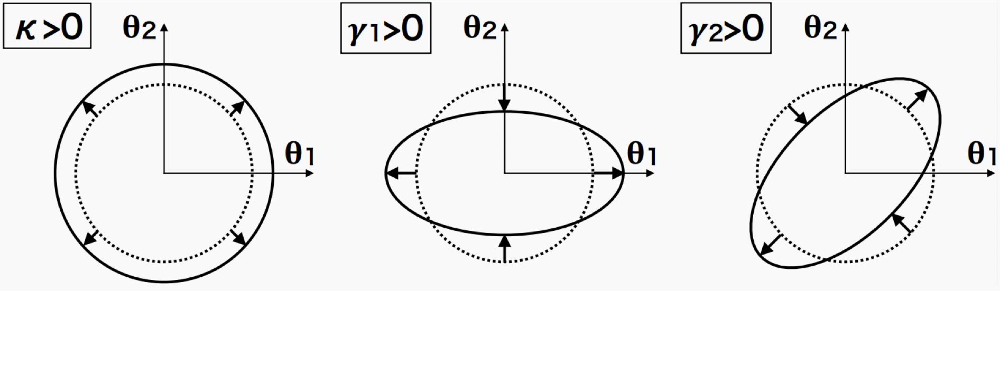
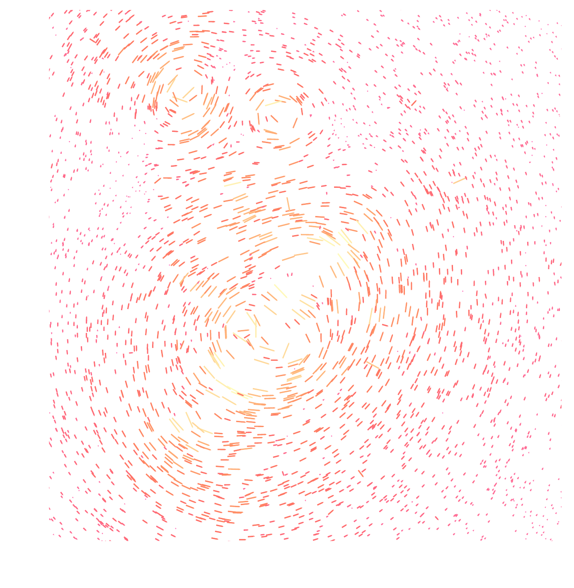
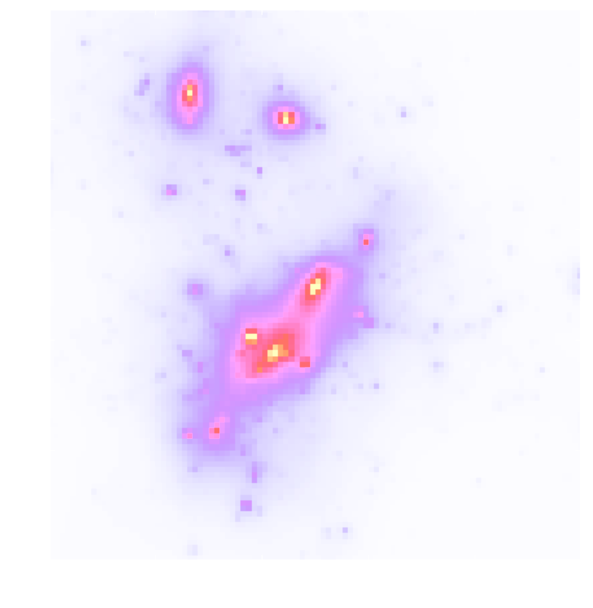

Shear & Convergence

Convergence $\kappa$
$$ \kappa = \frac{1}{2} (\partial_1 \partial_1 + \partial_2 \partial_2) \psi =
\frac12
\nabla^2 \psi $$
⟶ difficult to measure
Shear $\gamma$
$$ \gamma_1 = \frac{1}{2} (\partial_1 \partial_1 - \partial_2 \partial_2) \psi,
\,\,
\gamma_2 = \partial_1 \partial_2 \psi $$
⟶ can be measured by statistical analysis of galaxy shapes
Relation between $\kappa$ and $\gamma$
- From convergence to shear: $\,\, \gamma_i = \hat{P}_i \kappa$
- From shear to convergence: $\,\, \kappa = \hat{P}_1 \gamma_1 + \hat{P}_2 \gamma_2$
$$ \hat{P}_1(k)=\dfrac{k_1^2 - k_2^2}{k^2}, \,\,
\hat{P}_2(k)=\dfrac{2k_1k_2}{k^2} $$
The Weak Lensing Mass-Mapping as an Inverse Problem
Shear $\gamma$

Convergence $\kappa$

$$\gamma_1 = \frac{1}{2} (\partial_1^2 - \partial_2^2) \ \Psi \quad;\quad \gamma_2 = \partial_1
\partial_2 \ \Psi \quad;\quad \kappa = \frac{1}{2} (\partial_1^2 + \partial_2^2) \ \Psi$$
$$\boxed{\gamma = \mathbf{P} \kappa}$$
Kaiser-Squires inversion
- Mass mapping problem recover an estimate of the convergence from measurements of the shear $$\kappa = \dfrac12 \Delta \psi, \,\, \gamma_1 = \dfrac12 \left( \partial_1^2 \psi - \partial_2^2 \psi \right), \,\, \gamma_2 = \partial_1 \partial_2 \psi $$ $$\Rightarrow \kappa = \Delta^{-1} \left[ \left( \partial_1^2 - \partial_2^2 \right) \gamma_1 + 2\partial_1 \partial_2 \gamma_2 \right] $$
Kaiser-Squires estimator:
$$ \tilde{\kappa}_E+i \tilde{\kappa}_B=\left(\frac{k_1^2-k_2^2}{k^2}+i \frac{2 k_1
k_2}{k^2}\right)\left(\tilde{\gamma}_1+i
\tilde{\gamma}_2\right)=\mathbf{P}\left(\tilde{\gamma}_1+i \tilde{\gamma}_2\right)
$$
→ $\tilde{\kappa}_E$ and $\tilde{\kappa}_B$ are complex representations of convergence E and B modes.
From galaxies to mass maps
Mass mapping as an inverse problem
- Binned data: $\gamma = F^* P F \, \kappa$
- Unbinned data: $\gamma = T^* P F \, \kappa$
$T =$ Non Equispaced Disctrete Fourier Transform (NDFT)
$$ \tilde{\boldsymbol{\kappa}}=\min _{\boldsymbol{\kappa}}\|\boldsymbol{\gamma}-\mathbf{A}
\boldsymbol{\kappa}\|_{\boldsymbol{\Sigma}_n}^2 $$
with $\mathbf{A} = \boldsymbol{F} \mathbf{P} \boldsymbol{F}^* $
There is no unique and stable solution, it is an ill-posed problem.
Mass Mapping
Kaiser-Squires inversion
Advantages:
- Simple linear operator
- Very easy to implement in Fourier space
- Optimal, in theory
Practical difficulties:
- Shear measurements are discrete, noisy, and irregularly sampled
- We actually measure the reduced shear: $g = \gamma/(1-\kappa)$
- Masks and integration over a subset of $\mathbb{R}^2$ lead to border errors ⇒ missing data problem
- Convergence is recoverable up to a constant ⇒ mass-sheet degeneracy problem
Inpainting
- Inpainting methods → techniques to fill in missing data in images by estimating the missing values from the known ones.
- A way to deal with the missing data problem in mass mapping and with the border effects in the convergence field.
- Implement a sparse inpainting based on the DCT (assume that the full $\kappa$-field is sparse in the DCT dictionary → apply an iterative thresholding algorithm to recover the missing data).
MCALens
- Models $\kappa$-field as a sum of a Gaussian and non-Gaussian component $$\boxed{\kappa = \underbrace{\kappa_{\rm NG}}_{\text{Standard Wiener filter approach}} + \underbrace{\kappa_\rm G}_{\text{Modified wavelet approach}}}$$ $$\min _{\kappa_G, \kappa_{N G}}\left\|\gamma-\mathbf{A}\left(\kappa_G+\kappa_{N G}\right)\right\|_{\Sigma_n}^2+C_{\mathrm{G}}\left(\kappa_G\right)+C_{\mathrm{NG}}\left(\kappa_{N G}\right) $$
- MCA (morphological Component Analysis) performs an alternating
minimization
scheme:
- Estimate $\mathbf{\kappa}_{\mathrm{G}}$ assuming $\mathbf{\kappa}_{\mathrm{NG}}$ is known: $$\min _{\kappa_G}\left\|\left(\gamma-\mathbf{A}\kappa_{N G}\right) -\mathbf{A}\kappa_{G} \right\|_{\Sigma_n}^2+C_{\mathrm{G}}\left(\kappa_G\right)$$
- Estimate $\mathbf{\kappa}_{\mathrm{NG}}$ assuming $\mathbf{\kappa}_{\mathrm{G}}$ is known: $$\min _{\kappa_{NG}}\left\|\left(\gamma-\mathbf{A}\kappa_{G}\right) -\mathbf{A}\kappa_{NG} \right\|_{\Sigma_n}^2+C_{\mathrm{NG}}\left(\kappa_{NG}\right)$$
Overview of mass mapping methods
- Wiener filter: Prior on $\kappa$ → Gaussian random field, Likelihood → Gaussian, Solution → corresponds to MAP for gaussian $\kappa$
- Sparse recovery: Prior on $\kappa$ → sparse in wavelet basis, Enforces model where matter field is a combination of DM halos
- MCALens: Models $\kappa$-field as sum of a Gaussian and a non-Gaussian component, Uses Morphological Component Analysis
- Deep Learning Methods:
- DeepMass: CNN with a U-Net-based architecture, prior from simulations
- DeepPosterior: Probabilistic mass mapping with deep generative models, Prior from 2pt statistics modelling at large scales & Deep Learning on simulations for small scales, Sampling with Annealed HMC
Mass mapping methods:
\[
\begin{array}{ll}
\hline \hline
\text{Method} & \text{RMSE} \downarrow \\
\hline
\text{KS } & 1.1 \times 10^{-2} \\
\text{iKS } & 1.1 \times 10^{-2} \\
\text{MCALens} & 9.8 \times 10^{-3} \\
\hline
\end{array}
\]
Statistics
Higher Order Statistics: Peak Counts
- Peaks: local maxima of the SNR field $\nu = \dfrac{\left(\mathcal{W} \ast \kappa \right)(\theta_{\rm ker})}{\sigma_n^{\rm filt}}$
- Peaks trace regions where the value of $\kappa$ is high → they are associated to massive structures
Peak funtions
- The peak function is the number of peaks in a map as a function of the SNR $\nu$
Wavelet peaks
- We consider a multi-scale analysis compared to a single-scale analysis
- Apply (instead of Gaussian filter) a starlet transform → allows us to represent an image $I$ as a sum of wavelet coefficient images and a coarse resolution image
- Allows for the simultaneous processing of data at different scales → efficiency
- Each wavelet band covers a different frequency range, which leads to an almost diagonal peak count covariance matrix
Wavelet peak funtions
What happens if we consider all pixels instead of selecting multi-scale minima and maxima?
Starlet $\ell_1$-norm
- New higher order summary statistic for weak lensing observables
- Provides a fast multi-scale calculation of the full void and peak distribution
- $\ell_1$-norm = sum of absolute values of the starlet decomposition coefficients of a weak lensing map
- Information encoded in all pixels
- Automatically includes peaks and voids
- Multi-scale approach
- Avoids the problem of defining peaks and voids
Inference
Inference with HOS
- Use $\texttt{cosmoSLICS}$ simulations: suite designed for the analysis of WL data beyond the standard 2pt cosmic shear
- $\texttt{cosmoSLICS}$ cover a wide parameter space in $\left[ \Omega_m, \sigma_8, w_0, h \right]$.
- For Bayesian inference → use a Gaussian likelihood for a cosmology independent covariance, and a flat prior.
- To have a prediction of each HOS given a new set of parameters→ employ an interpolation with Gaussian Process Regressor (GPR)
Noise & Covariance
- We consider Gaussian, but non-white noise → the noise depends on the number of galaxies in each pixel $$\sigma_n = \dfrac{\sigma_{\epsilon}}{\sqrt{2 n_{\rm gal} A_{\rm pix}}}$$
- We incorporate masks
- Calculate covariance: $$ \boxed{C_{ij} = \sum_{r=1}^N \dfrac{\left( x_i^r - \mu_i \right) \left( x_j^r - \mu_j \right)}{N-1}} \, , \,\,\,\mu_i = \dfrac{1}{N} \sum_r x_i^r $$
The (standard) mono-scale peak counts
\[
\begin{array}{lcccc}
\hline \hline
\text{FoM} & \text{KS} & \text{iKS} & \text{MCALens} \\
\hline \hline
\left(\Omega_m, h\right) & 476 & 453 & 450 \\
\left(\Omega_m, w_0\right) & 152 & 141 & 233 \\
\left(\Omega_m, \sigma_8\right) & 1323 & 1285 & 1740 \\
\left(h, w_0\right) & 55 & 63 & 87 \\
\left(h, \sigma_8\right) & 336 & 292 & 293 \\
\left(w_0, \sigma_8\right) & 75 & 72 & 124 \\
\hline
\left(\Omega_m, h, w_0, \sigma_8\right) & 492 & 444 & 578 \\
\hline
\end{array}
\]
Wavelet multi-scale peak counts
\[
\begin{array}{lcccc}
\hline \hline
\text{FoM} & \text{KS} & \text{iKS} & \text{MCALens} \\
\hline \hline
\left(\Omega_m, h\right) & 670 & 702 & 2159 \\
\left(\Omega_m, w_0\right) & 247 & 244 & 1051 \\
\left(\Omega_m, \sigma_8\right) & 2414 & 2517 & 9039 \\
\left(h, w_0\right) & 82 & 80 & 259 \\
\left(h, \sigma_8\right) & 411 & 433 & 1335 \\
\left(w_0, \sigma_8\right) & 131 & 129 & 577 \\
\hline
\left(\Omega_m, h, w_0, \sigma_8\right) & 758 & 755 & 1947 \\
\hline
\end{array}
\]
Where does this improvement come from?
Conclusions
- Investigated how different mass mapping algorithms affect cosmological inference using HOS from WL data.
- Estimated posterior distributions of $\Omega_\mathrm{m}$, $\sigma_8$, $h$, and $w_0$ using peak counts and wavelet peak counts.
Results
- MCALens Advantage:
- $\sim 17\%$ improvement in (FoM) over KS.
- $\sim 157\%$ improvement in FoM over KS.
- KS vs. iKS: No significant difference in constraints → inpainting does not improve performance
- Wavelet Peak Counts: Provide tighter constraints than single-scale peak counts.
- MCALens and Multi-Scale Approach: Captures more small-scale information, leading to the greatest improvement.
Takeaway
- Careful Selection Matters: Choosing an advanced mass mapping method significantly enhances constraints on cosmological parameters from HOS.
New stuff
Future addition to this work
- Investigate the same thing within an ILI framework → no need for covmat, allows to investigate bias in a more proper way, allows for use of other statistics (e.g. NN-based statistics)
New mass-mapping method (with Hubert)
- Develop a new mass-mapping method based on Plug-and-Play that provides a fast reconstruction with uncertainty quantification and is trained once
- Plug-and-Play → framework that allows to combine deep denoising algorithms with optimization algorithms to solve inverse problems
- Include uncertaity quantification
- Some nice results for KappaTNG with a simple U-Net denoiser
- Plan to train on cosmoSLICS, on different cosmologies & noise levels + use more specialized denoisers
Wavelet $\ell_1$-norm theory validation (with Vilasini)
- Vilasini has a theoretical prediction for the wavelet $\ell_1$-norm, for any cosmology.
- Goal: validate this theory by producing contours with this theory, and compare them to the contours obtained from the simulations.
-
Approach:
- calculate the wavelet $\ell_1$-norm on cosmoSLICS maps, interpolate with GPR emulator, and produce contours
- instead of using the emulator, use the theoretical prediction to produce contours
Euclid (HOWLS) key-paper 2 - Cosmic shear higher-order statistics analysis of DR1 data with theory
- Do an analysis of Euclid DR1 with the wavelet $\ell_1$-norm emulator.
- (also co-lead the mass-mapping brick in HOWLS)
Project: Testing impact baryonic effects on WL HOS (+BNT)
Idea - Explore two things:
- Information content of summary statistics as a function of scale cuts
- Testing the impact of baryonic effects on posterior contours
This will show:
- On what range of scales can the different statistics be used without explicit model for baryons
- Answer the question: how much extra information beyond the PS these statistics can access in practice
Two possible outcomes
- Outcome 1: See that when applying scale cuts to remove significant
baryonic impact, we are still in a range of scales where an (A) HOS
accesses significantly more information than the PS
- → Directly look at application on data
or
- Outcome 2: See that when applying scale cuts as to remove the impact of
baryons, we fall in range of scales where there is not a lot of additional info
beyond the PS
- → Motivates finding ways to add some baryonic perscription to the analytic model of the l1-norm
In any case, this framework gives a way to assess the usable information content of different summary stats when systematics are taken into account
Some initial results
BNT transform
- When we observe cosmic shear, contributions come from mass at different redshifts (distances).
- This creates projection effects: large and small-scale structures get mixed up.
- These effects make it harder to accurately analyze data and extract information
BNT transform
- BNT Transform: A method to “null” or remove contributions from unwanted redshift ranges.
- It reorganizes the weak-lensing data so that only specific redshift ranges contribute to the signal, making it easier to analyze.
- It focuses on isolating lensing contributions by sorting out overlapping signals.